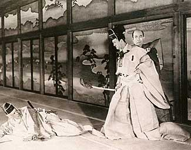

|
Chushingura/A/B
|
|
Image/1941-42/220m/FS1.33
|
The
great director’s legendary
version of The 47 Ronin is finally
available in a sparkling DVD transfer.
BY GARY MORRIS
Genroku Chushingura, also known as The Forty-Seven Ronin
of the Genroku Era, or in the case of Kenji
Mizoguchi’s two-part, 220-minute adaptation, The Loyal
Forty-Seven Ronin (1941-42), is one of Japan’s great
historical legends. Retold in countless theatrical versions and
perhaps several dozen films, Ronin tells the story of a band of
masterless samurai (ronin) who exact revenge for the death of
their beloved master and then commit hara-kiri. In her book Mr.
Smith Goes to Tokyo: Japanese Cinema Under the American
Occupation 1945-1952, Kyoko Hirano notes, "It is said
that whenever a film studio fell into financial distress, it
would produce a film based on this story, for a guaranteed
hit."
In
fact, Mizoguchi’s 220-minute black-and-white version reversed
that trend. The film was not only not a hit, but it broke one
studio — Koa, where part one was filmed — and nearly
bankrupted a second — Shochiku, which took over the production
of part two. The film is also a curious one for the director,
whose career is more notable for sweeping historical works (Sansho
the Bailiff) and grim women-centered melodramas (The
Life of Oharu) than for action-oriented samurai movies. And
indeed, there’s surprisingly little action in his version of a
story noted for its violence, betrayal, suicide, and social
upheaval. The project was more or less forced on Mizoguchi and
his studios by a government that was taking increasing control
of film production and mandating a cinema that would inspire
loyalty among the people as the country sank deeper into World
War II. Ronin was an ideal project for this purpose, with
its powerful images of loyalty at any cost and the heroic
pleasures of self-sacrifice to a greater good, and Mizoguchi
responded enough to the more contemplative, downbeat elements to
make it one of his most intriguing pictures.

The
story opens in 1701, with Lord Asano of Ako Castle attending
formal ceremonies at Edo Castle. Unaware of certain proprieties,
he responds to insults by Lord Kira by drawing his sword and
slightly wounding him, an act that brings a death sentence on
Asano. After he’s forced to kill himself, his lands and
buildings are taken, his family is ousted, and his samurai are
forced into the lowly status of ronin. The remainder of this
complex tale explores the decline and spiritual redemption of
these men as they plot to take revenge on Lord Kira and
reinstate their honor, and the honor of their house, before
joining their master in committing ritual suicide.
Perhaps
not unexpectedly for anyone aware of Mizoguchi’s style, but
unsatisfactorily for Japan’s mass audiences who knew the tale
well and no doubt had their own expectations, his Ronin
subjugates swordplay and bloodshed to contemplation and emotion.
The only obviously violent scene occurs when Lord Asano attacks
Kira, but even that is only shown briefly. Key events like the
death of Asano, the attack on Kira’s castle, and even the mass
suicide that ends the film are not shown but only tantalizingly
led up to with Mizoguchi’s trademark stately framing and
elegant tracking shots; in a masterful ellipsis, the final
assault on Kira’s castle is only revealed by a message read by
Lady Asano. Throughout, the director concentrates on the
ronin’s emotional anguish and overwhelming sense of loss,
powerfully imparted in bitter long-take dialogue exchanges,
scenes in which the ronin are literally laid low with grief, or
the simple tracking of a character moving with slow solemnity
through an empty garden. The director’s treatment of an early
suicide by one of the ronin, who takes his son along with him,
typifies the film’s air of tragic poignancy.
Previously
hampered in many of his budgets, Mizoguchi for the first time
was given enormous freedom in this area, with the first part
alone costing a record 530,000 yen, or about five times the
budget of a typical major film of the era. The effects of this
freedom are everywhere evident on screen, with the director’s
fetish for historical authenticity for once completely realized
in meticulously detailed costumes and elaborate, full-scale
sets. This is also the first film in which he was able to employ
a crane extensively, and Ronin contains some of his most
extravagantly beautiful shots utilizing this device. The
director acknowledged his debt to von Sternberg around this
time, but the sheer visual beauty of Ronin is
distinctively "Mizoguchian." Fans of the director will
find it a major achievement; those more familiar with the more
action-minded 1962 Toho version or any of the many others that
take a more standard approach may be disappointed.
In
spite of the film’s box-office failure, the government
heartily approved what it saw as an affirming message of the
importance of loyalty under extreme duress, and awarded
Mizoguchi a special prize for his achievement. The film was not
seen in the west until 1979. Image’s transfer is for the most
part sharp and highly watchable, a far cry from what’s usually
seen on the underground dupes that circulate on films this rare.
November 1999 | Issue
26
Copyright © 1999 by Gary Morris
|

Gary
Morris's DVD Reviews are reprinted from Bright Lights Film
Journal. Click on the image above for more pure movie views.


The wonderful comedy of Danny Kaye
comes from a sweet source, making it live for audiences of all ages.
Patter songs and graceful dances are part of Kaye's world. Click on
the image for Any Day Danny Kaye.

 Direct
from the corridors of the Home
Theater Forum, Home Theater Talk is
the newest place on the Net to
discuss everything home theater.
Friendly atmosphere and
knowledgeable folks are the secret
ingredients. Direct
from the corridors of the Home
Theater Forum, Home Theater Talk is
the newest place on the Net to
discuss everything home theater.
Friendly atmosphere and
knowledgeable folks are the secret
ingredients.
ReelClassics.com
A
mountain of information on actors and
actresses, directors and Hollywood, with
more links than you can count. Want
information on Ida Lupino?
ReelClassics.com is a great recourse.
Elizabeth for does a yeoman-like maintenance
job
 DVD
Gold DVD
Gold
specializes in Region 2 films, and spins gold about the latest
DVD releases in England and elsewhere. Check out the new site.

A great place for movie lovers and
techies to visit for exchange of ideas. New speedy interface is an
inspiration for more dialogue.
 Lovers
of Hong Kong movies will relish
MC4's site that includes reviews and other information
about the Hong Kong movie scene. Lovers
of Hong Kong movies will relish
MC4's site that includes reviews and other information
about the Hong Kong movie scene.

The
Movie Poster Archive include extensive poster images from the
films of stars like Susan Hayward, Kirk Douglas, Katharine
Hepburn and many more. This month's featured star is Robert
Mitchum
|